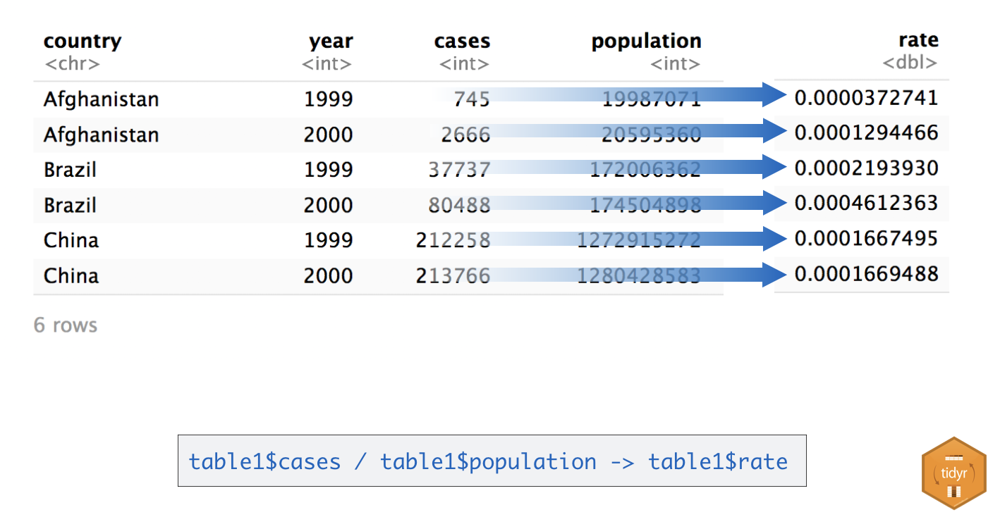
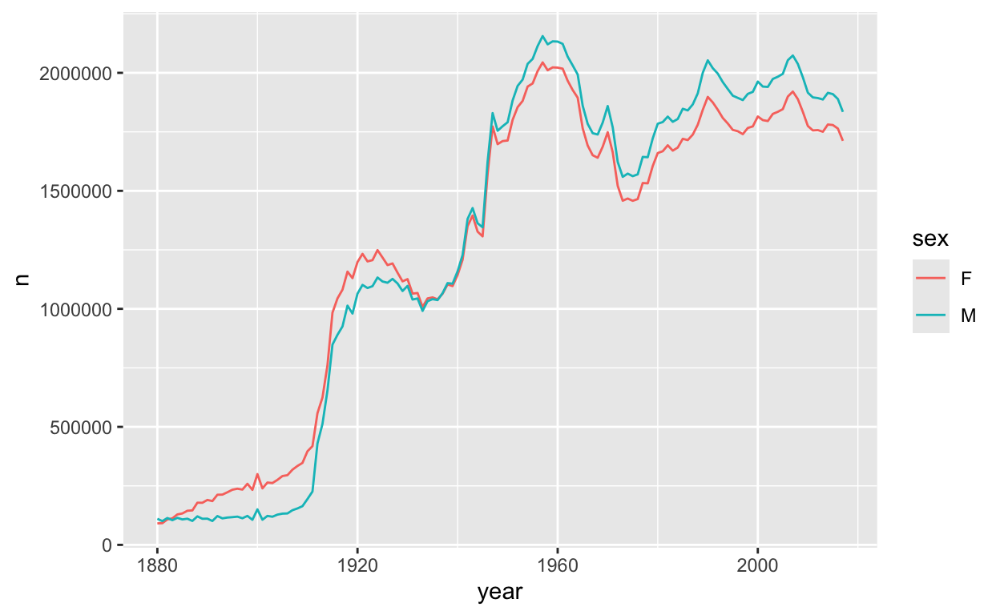
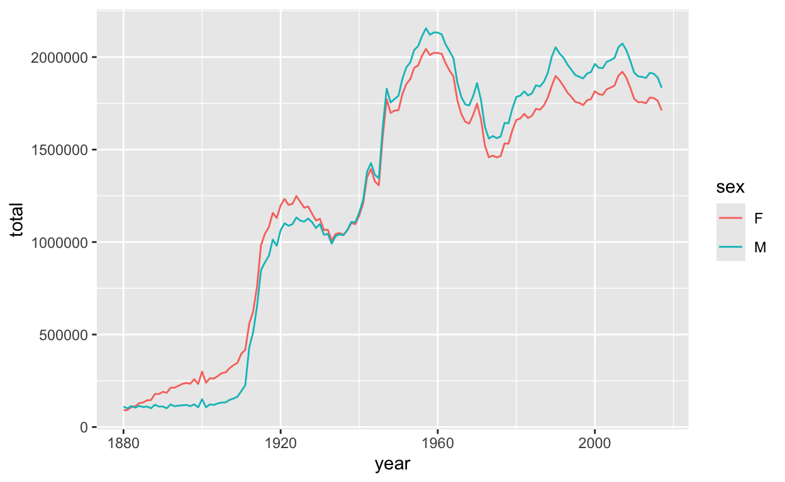
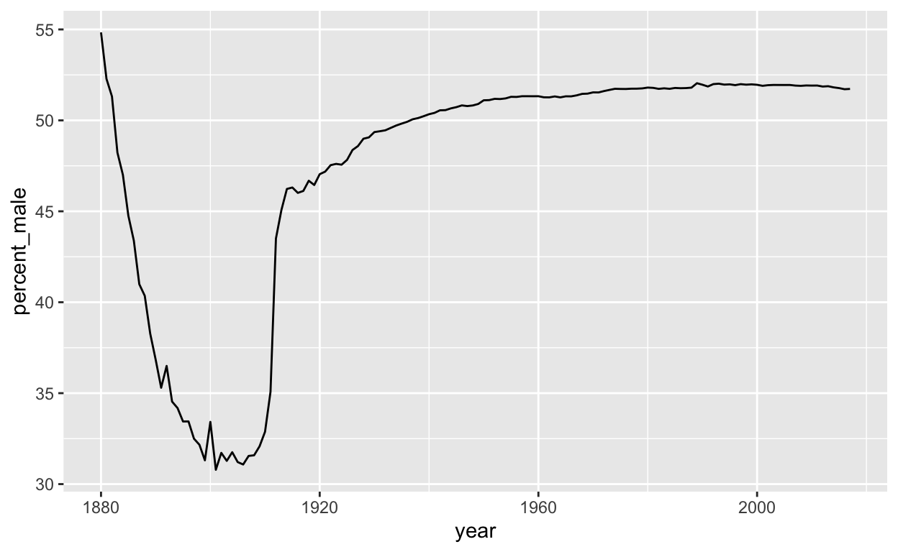

Welcome
The tools that you learned in the previous Primers work best when your data is organized in a specific way. This format is known as tidy data and it appears throughout the tidyverse. You will spend a lot of time as a data scientist wrangling your data into a useable format, so it is important to learn how to do this fast.
This tutorial will teach you how to recognize tidy data, as well as how to reshape untidy data into a tidy format. In it, you will learn the core data wrangling functions for the tidyverse:
pivot_longer()- which reshapes wide data into long data, andpivot_wider()- which reshapes long data into wide data
This tutorial uses the core tidyverse
packages, including ggplot2, dplyr, and tidyr, as well as the
babynames package. All of these packages have been
pre-installed and pre-loaded for your convenience.
Click the Next Topic button to begin.
Tidy Data
Variables, values, and observations
We proposed three definitions that are useful for data science:
A variable is a quantity, quality, or property that you can measure.
A value is the state of a variable when you measure it. The value of a variable may change from measurement to measurement.
An observation is a set of measurements that are made under similar conditions (you usually make all of the measurements in an observation at the same time and on the same object). An observation will contain several values, each associated with a different variable. We will sometimes refer to an observation as a case or data point.
These definitions are tied to the concept of tidy data. To see how, let’s apply the definitions to some real data.
Quiz 1 - What are the variables?
table1Quiz 2 - What are the variables?
Now consider this data set. Does it contain the same variables?
table2The shapes of data
These data sets reveal something important: you can reorganize the same set of variables, values, and observations in many different ways.
It’s not hard to do. If you run the code chunks below, you can see the same data displayed in three more ways.
table3table4a; table4btable5Tidy data
Data can come in a variety of formats, but one format is easier to use in R than the others. This format is known as tidy data. A data set is tidy if:
- Each variable is in its own column
- Each observation is in its own row
- Each value is in its own cell (this follows from #1 and #2)
Among our tables above, only table1 is tidy.
table1Extracting variables
To see why tidy data is easier to use, consider a basic task. Each
code chunk below extracts the values of the cases variable
as a vector and computes the mean of the variable. One uses a tidy
table, table1:
mean(table1$cases)## [1] 91276.67The other uses an untidy table, table2:
mean(table2$count[c(1, 3, 5, 7, 9, 11)])## [1] 91276.67Which line of code is easier to write? Which line could you write if you’ve only looked at the first row of the data?
Reusing code
Not only is the code for table1 easier to write, it is
easier to reuse. To see what we mean, modify the code chunks below to
compute the mean of the population variable for each
table.
First with table1:
mean(table1$cases)mean(table1$population)Then with table2:
mean(table2$count[c(1, 3, 5, 7, 9, 11)])mean(table2$count[c(2, 4, 6, 8, 10, 12)])Again table1 is easier to work with; you only need to
change the name of the variable that you wish to extract. Code like this
is easier to generalize to new data sets (if they are tidy) and easier
to automate with a function.
Let’s look at one more advantage.
Calculations
Suppose you would like to compute the ratios of cases to
population for each country and each year. To do this, you
need to ensure that the correct value of cases is paired
with the correct value of population when you do the
calculation.
Again, this is hard to do with untidy table2:
table2$count[c(1, 3, 5, 7, 9, 11)] / table2$count[c(2, 4, 6, 8, 10, 12)]## [1] 0.0000372741 0.0001294466 0.0002193930 0.0004612363 0.0001667495
## [6] 0.0001669488But it is easy to do with tidy table1. Give it a try
below:
table1$cases / table1$populationThese small differences may seem petty, but they add up over the course of a data analysis, stealing time and inviting mistakes.
Tidy data and R
The tidy data format works so well for R because it aligns the structure of your data with the mechanics of R:
R stores each data frame as a list of column vectors, which makes it easy to extract a column from a data frame as a vector. Tidy data places each variable in its own column vector, which makes it easy to extract all of the values of a variable to compute a summary statistic, or to use the variable in a computation.
R computes many functions and operations in a vectorized fashion, matching the first values of each vector of input to compute the first result, matching the second values of each input to compute the second result, and so on. Tidy data ensures that R will always match values with other values from the same operation whenever vector inputs are drawn from the same table.

As a result, most functions in R—and every function in the
tidyverse—will expect your data to be organized into a tidy format. (You
may have noticed above that we could use dplyr functions to work on
table1, but not on table2).
Recap
“Data comes in many formats, but R prefers just one: tidy data.” — Garrett Grolemund
A data set is tidy if:
- Each variable is in its own column
- Each observation is in its own row
- Each value is in its own cell (this follows from #1 and #2)
Now that you know what tidy data is, what can you do about untidy data?
Longer
Untidy data
“Tidy data sets are all alike; but every messy data set is messy in its own way.” — Hadley Wickham
How you tidy an untidy data set will depend on the initial
configuration of the data. For example, consider the cases
data set below.
casesQuiz 3 - What are the variables?
pivot_longer()
You can use the pivot_longer() function in the
tidyr package to convert wide data to long data.
pivot_longer() makes datasets longer by increasing
the number of rows and decreasing the number of columns. Notice
that pivot_longer() returns a tidy copy of the dataset, but
does not alter the original dataset. If you wish to use this copy later,
you’ll need to save it somewhere.
cases %>% pivot_longer(cols = -Country, names_to = "Year")Let’s take a closer look at the pivot_longer()
syntax.
pivot_longer() syntax
Here’s the same call written without the pipe operator, which makes the syntax easier to see.
pivot_longer(cases, cols = -Country, names_to = "Year")To use pivot_longer(), pass it the name of a data set to
reshape, which columns need to be reshaped, and the name of the variable
that will be created from the data stored in the specified columns. By
default, pivot_longer() will put all the values that were
in the specified columns in a new column named “value”, but you can
change this name with the values_to = argument. Each name
should be a character string surrounded by quotes.
In our example, pivot_longer will reshape all columns except Country by removing these columns from the results and moving their contents to a new, single column called “Year”. Any unspecified columns will remain in the dataset, their contents repeated as often as necessary to duplicate each relationship in the original untidy data set.
Key and Value columns
pivot_longer() relies on the idea of key:value pairs. A
key value pair is a pair that lists a value alongside the name of the
variable that the value describes. (We could store every value in a
dataset as a key value pair, but this is not how R works.)
In a tidy data set, you will find “keys”—that is variable names—in the column names of the data set. The values will appear in the cells of the columns. Here we know that the key for each value in the year column is year. This arrangement reduces duplication.
Sometimes you will also find key value pairs listed beside each other
in two separate columns, as in table2. Here the
type column lists the keys that are associated with the
count column. This layout is sometimes called “narrow”
data.
Tidyr functions rely on the key value vocabulary to describe what
should go where. In pivot_longer() the
names_to = argument describes the new column that contains
the values that previously appeared in the tidy key position, i.e. in
the column names specified in the cols = argument. The
values_to = argument describes the new column that contains
the values that previously appeared in the value positions, e.g. in the
column cells.
Exercise 1 - Tidy table4a
Now that you’ve seen pivot_longer() in action, try using
it to tidy table4a:
table4aThe result should contain three columns: country,
year, and cases. Begin by modifying our code
below.
table4a %>% pivot_longer(names_to = "year", values_to = "cases")table4a %>% pivot_longer(cols = -country, names_to = "year", values_to = "cases")Specifying columns
pivot_longer() recognizes column numbers and names as
well as all of the select() helpers that you learned about
in Isolating Data
with dplyr. So for example, these expressions would all do the same
thing:
table4a %>% pivot_longer(cols = -country, names_to = "year", values_to = "cases")
table4a %>% pivot_longer(cols = 2:3, names_to = "year", values_to = "cases")
table4a %>% pivot_longer(cols = c("1999", "2000"), names_to = "year", values_to = "cases")
table4a %>% pivot_longer(cols = one_of(c("1999", "2000")), names_to = "year", values_to = "cases")Notice that 1999 and 2000 are numbers. When you directly call column
names that are numbers, you need to surround the names with backticks or
quotes (otherwise pivot_longer() would think you mean the
1999th and 2000th columns). Use ?select_helpers to open a
help page that lists the select helpers.
Exercise 2 - Tidy table4b
Use pivot_longer() and the - helper to tidy
table4b into a dataset with three columns:
country, year, and
population.
table4btable4b %>% pivot_longer(-country, names_to = "year", values_to = "population")Converting output
If you looked closely at your results in the previous exercises, you
may have noticed something odd: the new year column contains character
vectors. You can tell because R displays <chr>
beneath the column name.
table4b %>% pivot_longer(-country, names_to = "year", values_to = "population")table4b %>% pivot_longer(-country, names_to = "year", names_transform = as.numeric, values_to = "population")You can ask R to convert each new column to an appropriate data type
with the names_transform = argument. Use
?pivot_longer to learn more about the
names_transform argument, then give it a try in the code
above by converting the “year” column to numeric.
The flexibility of pivot_longer()
cases, table4a, and table4b
are all rectangular tables:
- each row corresponds to the value of a variable, and
- each column corresponds to the value of a variable
Rectangular tables are a simple form of wide data. But you will also
encounter more complicated examples of wide data. For example, it is
common for researchers to place one subject per row. In this case, you
might see several columns of identifying information followed by a set
of columns that list repeated measurements of the same variable.
cases2 emulates such a data set.
cases2To tidy this data, you would want to keep the first three columns as
they are. Can you tidy this data with pivot_longer()? Yes,
and you already know how. Think about the problem and then tidy
cases2 into a data set with five columns:
city, country, continent,
year, and cases.
cases2 %>% pivot_longer(cols = c(`2011`, `2012`, `2013`), names_to = "year", values_to = "cases")Wider
Narrow data
The pollution dataset below displays the amount of small
and large particulate in the air of three cities. It illustrates another
common type of untidy data. Narrow data uses a literal
key column and a literal value column to store multiple variables. Can
you tell here which is which?
pollutionQuiz 4 - Which is the key column?
pollutionQuiz 5 - Which is the value column?
pollutionpivot_wider()
You can “widen” the keys in a key column across their own set of
columns with the pivot_wider() function in the
tidyr package. To use pivot_wider() pass
it the name of a data set to spread/widen (provided here by the pipe
%>%). Then tell pivot_wider which column to use as the
key column with the names_to = argument and which column to
use as a value column with the values_from = argument.
pollution %>% pivot_wider(names_from = size, values_from = amount)pivot_wider() will give each unique value in the
names_from = column its own column. The name of the value
will become the column name. pivot_wider() will then
redistribute the values in the values_from = column across
the new columns in a way that preserves every relationship in the
original dataset.
Exercise 3 - Tidy table2
Use pivot_wider() to tidy table2 into a
dataset with four columns: country, year,
cases, and population. In short, convert
table2 to look like table1.
table2table2 %>% pivot_wider(names_from = type, values_from = count)To quote or not to quote
You may notice that both pivot_longer() and
pivot_wider() take name and value
arguments. And, in each case the arguments are set to column names. But
in the pivot_longer() you must surround the names with
quotes and in the pivot_wider() case you do not. Why is
this?
table4b %>% pivot_longer(cols = -country, names_to = "year", values_to = "population")
pollution %>% pivot_wider(names_from = size, values_from = amount)Don’t let the difference trip you up. Instead think about what the quotes mean.
- In R, any sequence of characters surrounded by quotes is a character string, which is a piece of data in and of itself.
- Likewise, any sequence of characters not surrounded by quotes is the name of an object, which is a symbol that contains or points to a piece of data. Whenever R evaluates an object name, it searches for the object to find the data that it contains. If the object does not exist somewhere, R will return an error.
In our pivot_longer() code above, “year” and
“population” refer to two columns that do not yet
exist. If R tried to look for objects named year and
population it wouldn’t find them (at least not in the
table4b dataset). When we use pivot_longer()
we are passing R two values (character strings) to use as the name of
future columns that will appear in the result.
In our pivot_wider() code, key and value point to two
columns that do exist in the pollution dataset:
size and amount. When we use pivot_wider(), we are telling
R to find these objects (columns) in the dataset and to use their
contents to create the result. Since they exist, we do not need to
surround them in quotation marks.
In practice, whether or not you need to use quotation marks will
depend on how the author of your function wrote the function (For
example, pivot_wider() will still work if you do include
quotation marks). However, you can use the intuition above as a guide
for how to use functions in the tidyverse.
Boys and girls in babynames
Let’s apply pivot_wider() to a real world inquiry. The
plot below visualizes an aspect of the babynames data set
from the babynames package. (See Work with
Data for an introduction to the babynames data set.)
## `summarise()` has grouped output by 'year'. You can override using the
## `.groups` argument.
The ratio of girls to boys in babynames is not constant
across time. We can explore this phenomenon further by recreating the
data in the plot.
Review - Make the data
## `summarise()` has grouped output by 'year'. You can override using the
## `.groups` argument.
To make the data displayed in the plot above, we first grouped
babynames by year and sex. Then we computed a
summary for each group: total, which is equal to the sum of
n for each group.
Use dplyr functions to recreate this process in the chunk below.
babynames %>%
group_by(year, sex) %>%
summarise(total = sum(n))Review - Make the plot
## `summarise()` has grouped output by 'year'. You can override using the
## `.groups` argument.Use the data below to make the plot above, which was built with ggplot2 functions.
babynames %>%
group_by(year, sex) %>%
summarise(total = sum(n))babynames %>%
group_by(year, sex) %>%
summarise(total = sum(n)) %>%
ggplot() +
geom_line(aes(year, total, color = sex))A better way to look at the data
A better way to explore this phenomena would be to directly plot a ratio of boys to girls over time. To make such a plot, you would need to compute the ratio of boys to girls for each year from 1880 to 2015:
\[\text{ratio male} = \frac{\text{total male}}{\text{total female}}\]
But how can we plot this data? Our current iteration of
babynames places the total number of boys and girls for
each year in the same column, which makes it hard to use both totals in
the same calculation.
babynames %>%
group_by(year, sex) %>%
summarise(total = sum(n))## `summarise()` has grouped output by 'year'. You can override using the
## `.groups` argument.A goal
It would be easier to calculate the ratio of boys to girls if we could reshape our data to place the total number of boys born per year in one column and the total number of girls born per year in another:
## `summarise()` has grouped output by 'year'. You can override using the
## `.groups` argument.Then we could compute the ratio by piping our data into a call like
mutate(ratio = M / F).
Exercise 4 - Make the plot
Add to the code below to:
- Reshape the layout to place the total number of boys per year in one column and the total number of girls born per year in a second column.
- Compute the ratio of boys to girls.
- Plot the ratio of boys to girls over time.
babynames %>%
group_by(year, sex) %>%
summarise(total = sum(n))babynames %>%
group_by(year, sex) %>%
summarise(total = sum(n)) %>%
pivot_wider(names_from = sex, values_from = total) %>%
mutate(ratio = M / F) %>%
ggplot(aes(year, ratio)) +
geom_line()Interesting
Our results reveal a conspicuous oddity, that is easier to interpret if we turn the ratio into a percentage.
## `summarise()` has grouped output by 'year'. You can override using the
## `.groups` argument.
The percent of recorded male births is unusually low between 1880 and 1936. What is happening? One insight is that the data comes from the United States Social Security office, which was only created in 1936. As a result, we can expect the data prior to 1936 to display a survivorship bias.
Recap
Your data will be easier to work with in R if you reshape it into a tidy layout at the start of your analysis. Data is tidy if:
- Each variable is in its own column
- Each observation is in its own row
- Each value is in its own cell
You can use pivot_longer() and
pivot_wider(), or some iterative sequence of the two, to
reshape your data into any possible configuration that:
- Retains all of the values in your original data set, and
- Retains all of the relationships between values in your original data set.
In particular, you can use these functions to recast your data into a tidy layout.
Food for thought
It is not always clear whether or not a data set is tidy. For example, the version of babynames that was tidy when we wanted to plot total children by year, was no longer tidy when we wanted to compute the ratio of male to female children.
The ambiguity comes from the definition of tidy data. Tidiness depends on the variables in your data set. But what is a variable depends on what you are trying to do.
To identify the variables that you need to work with, describe what you want to do with an equation. Each variable in the equation should correspond to a variable in your data.
So in our first case, we wanted to make a plot with the following mappings (e.g. equations)
\[x = year\] \[y = total\] \[color = sex\]
To do this, we needed a data set that placed \(year\), \(total\), and \(sex\) each in their own columns.
In our second case we wanted to compute \(ratio\), where
\[\text{ratio} = \frac{\text{male}}{\text{female}}\] This formula has three variables: \(ratio\ \ male\), \(total\ \ male\), and \(total\ \ female\). To create the first variable, we required a data set that isolated the second and third variables (\(total\ \ male\) and \(total\ \ female\)) in their own columns.